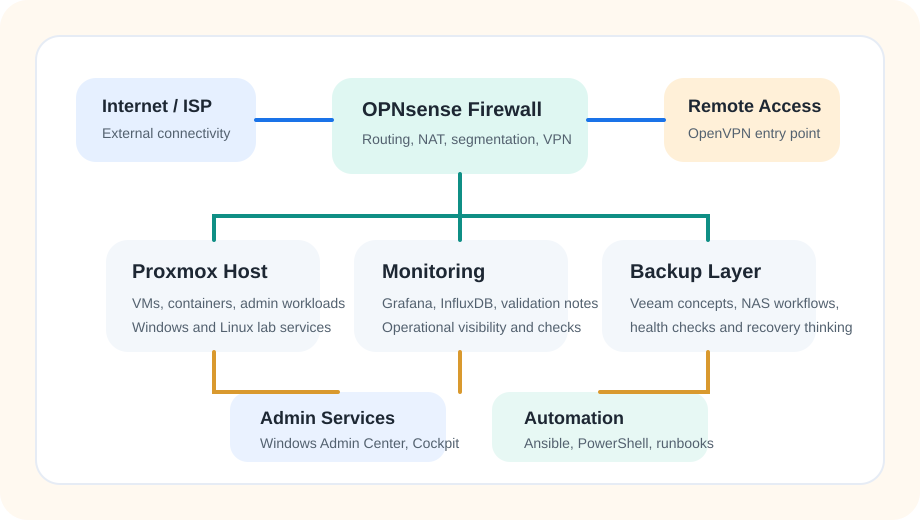

Ottawa, ON | Expected Graduation: April 2026
Building practical infrastructure with a home lab mindset.
I am a Computer Systems Technician - Networking student focused on junior systems, network, and infrastructure support roles. My recent work spans Proxmox VE, OPNsense, Windows Server, Samba AD, Veeam, Grafana, Docker, and Ansible across coursework and home lab projects.
Featured Work
Projects that show how I think, build, and document infrastructure.
Capstone Infrastructure Project
Multi-tenant private cloud handover
Collaborated with five teammates to design and document a dual-organization lab environment built on Proxmox VE, OPNsense, Windows Server 2022, Samba AD, Windows iSCSI, Veeam, and browser-based admin tooling.
- Tenant-separated identity, storage, DMZ, and management paths
- Monitoring through Grafana and InfluxDB
- Backup copy workflow routed through site-to-site OpenVPN
- Formal 51-page handover report for support transition
Home Lab
Self-managed infrastructure sandbox
My home lab is where I test network segmentation, remote access, container services, and backup workflows before turning them into cleaner project documentation and repeatable operational notes.
- VLAN-based segmentation for safer device isolation
- OPNsense rules and OpenVPN remote access
- Docker services and NAS-aligned backup thinking
- Ansible for baseline automation experiments
Showcase Repository
Readable GitHub proof, not just screenshots
The linked GitHub project packages architecture notes, validation checklists, and a PowerShell health-check script so recruiters can see both the technical stack and the way I document operational work.
- Sanitized architecture notes
- Reusable validation checklist
- PowerShell endpoint and backup health check
- Recruiter-friendly README and project structure
Sanitized View
High-level home lab map

I keep external-facing demos high level and sanitized. The goal is to show architecture, validation habits, and operational thinking without exposing secrets, internal hostnames, or real administrative data.
- Public-facing diagrams use sanitized service names
- Internal IPs, credentials, and VPN details stay private
- Evidence focuses on stack, outcomes, and supportability
Core Stack
Tools I have been using most recently
Infrastructure
Proxmox VE, Hyper-V, Windows Server 2019/2022, Ubuntu, Red Hat/CentOS, Alpine Linux
Networking
Cisco IOS, ArubaOS, VLANs, OSPF, STP, TCP/IP, DNS, DHCP, VPN, OPNsense/pfSense, NAT, DMZ
Operations
AD DS, GPO, Samba AD, iSCSI, Veeam Backup & Replication, Grafana, InfluxDB, Windows Admin Center, Cockpit
Automation
Docker, Ansible, PowerShell, Wireshark, Microsoft 365, technical handover documentation
Contact